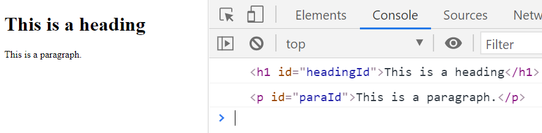

GetElementById
Getting HTML Elements
If an HTML element has an id attribute, JavaScript may use the document.getElementById() method to get a reference to that HTML element.
A reference to the element may be stored in a variable.
index.html
<body>
<h1 id="headingId">This is a Heading</h1>
<p id="paraId">This is a paragraph.</p>
<!-- Run External JavaScript File -->
<script src="main.js"></script>
</body>
main.js
// Variables to store reference to HTML Elements
let headingEl = document.getElementById("headingId");
let paragraphEl = document.getElementById("paraId");
// Log elements to console to verify
console.log(headingEl);
console.log(paragraphEl);
Below, you can see the result of logging the headingEl and paragraphEl variables to the console. The variables are storing a reference to the HTML heading and paragraph elements.

Summary
- JavaScript can use
document.getElementById()to get a reference to an html element. - Further lessons will show how JavaScript can use a reference to an html element to interact with the web page.